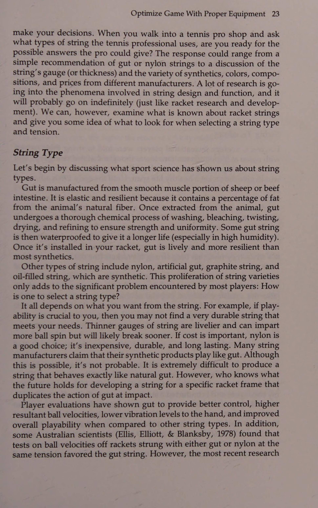
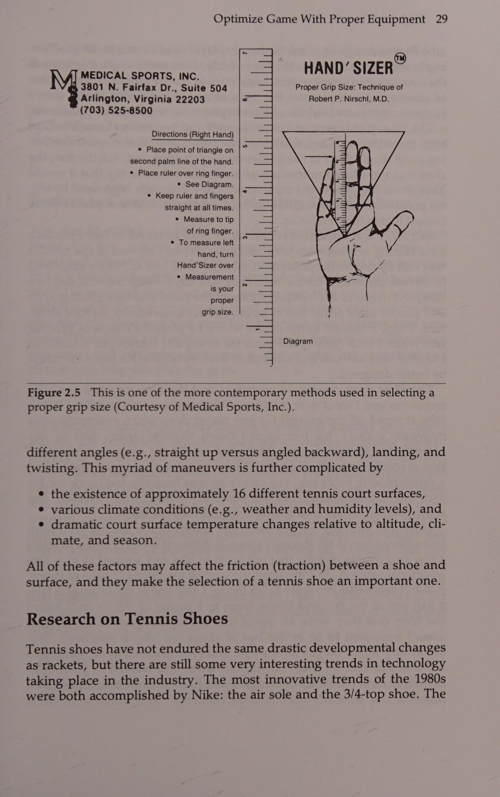
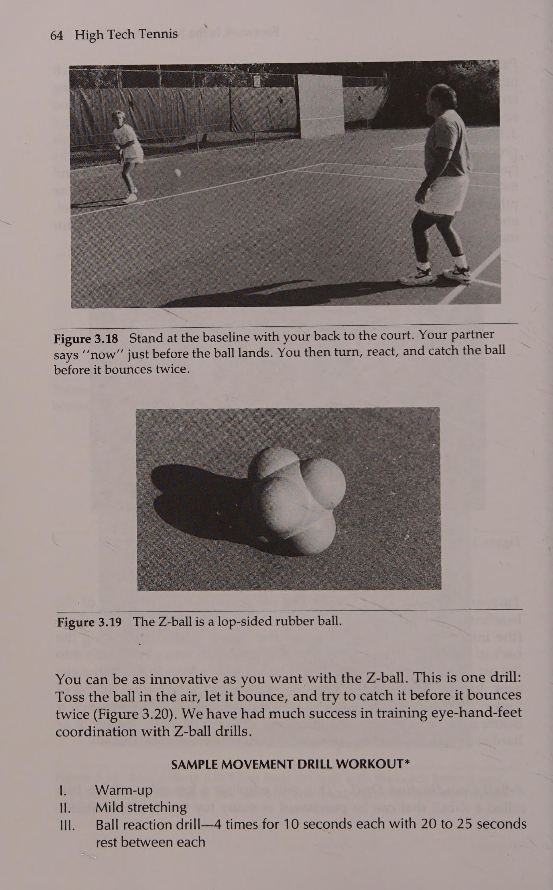
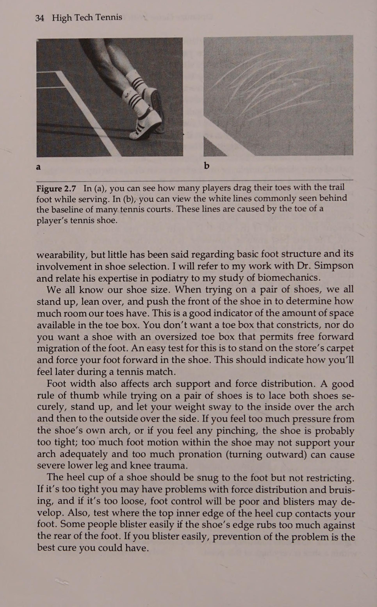
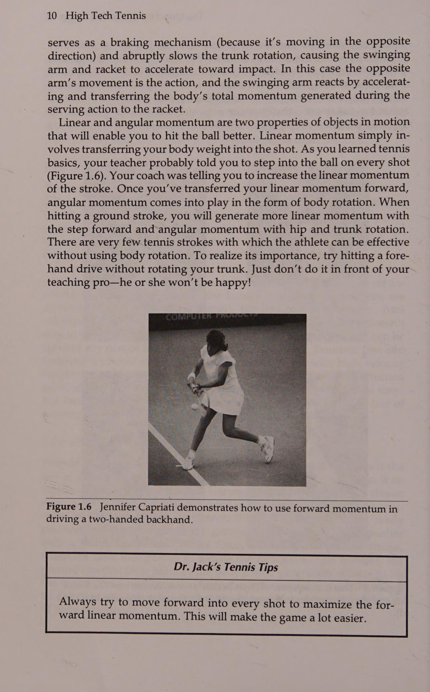
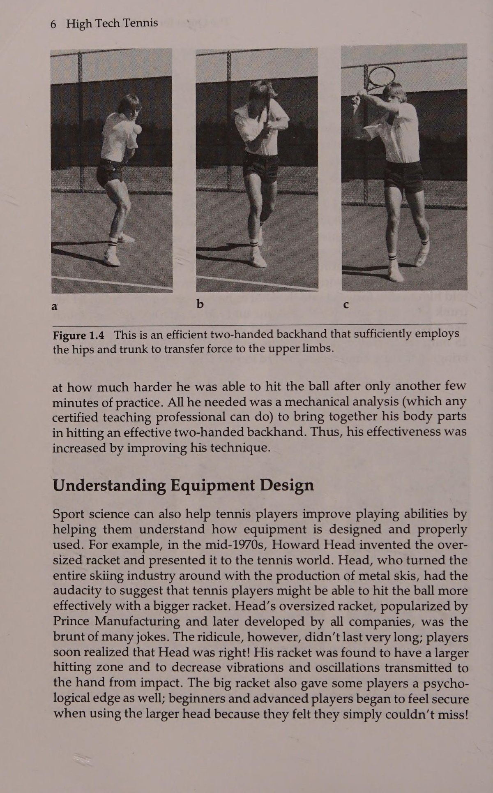
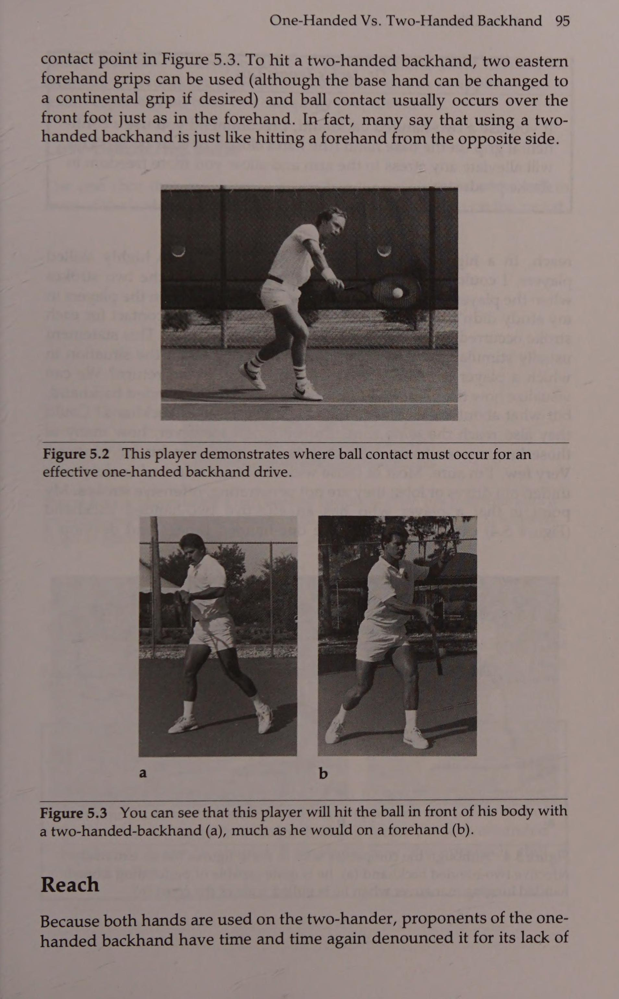

Phần I: Khoa Học Thể Thao, Khí Cụ Hiện Đại & Cơ Sinh Học Bộ Chân
Phân tích cơ sở khoa học thể thao của Tiến sĩ Jack Groppel: Khí động học khung vợt, kiểm soát trọng tâm cơ thể và kỹ thuật xả trọng lượng (Unweighting) trong di chuyển
1. Cuộc Cách Mạng Khoa Học Thể Thao: Từ Thần Thoại Đến Cơ Sinh Học
Trong nhiều thập kỷ của thế kỷ hai mươi, quần vợt phần lớn được giảng dạy dựa trên những kinh nghiệm truyền miệng mang nặng tính cảm tính.
Những câu thần chú như "luôn bước chân trước về phía lưới", "giữ mặt vợt hoàn toàn vuông góc", hay "nhìn thẳng vào bóng cho đến khi chạm dây" đã bị lặp đi lặp lại như những chân lý bất biến.
Tuy nhiên, khi khoa học thể thao và công nghệ ghi hình tốc độ cao (High-speed cinematography) thâm nhập vào phòng thí nghiệm quần vợt, các nhà khoa học đã phát hiện ra rằng những gì các tay vợt đẳng cấp thế giới thực sự thực hiện hoàn toàn khác xa so với những gì họ tưởng rằng mình đang làm.
Tiến sĩ Jack L. Groppel — chuyên gia cơ sinh học thể thao hàng đầu và là thành viên cốt cán của Ủy ban Khoa học Thể thao Quốc gia USTA — nhấn mạnh:
Cơ sinh học (Biomechanics) không sinh ra để biến bạn thành một cỗ máy cứng nhắc; cơ sinh học giúp bạn hiểu rõ các định luật vật lý Newton điều khiển chuyển động của cơ thể người và trái bóng nỉ.
Khi một vận động viên hiểu được nguyên lý truyền động lượng, họ sẽ ngừng việc dùng sức cơ bắp cục bộ của cánh tay để đập bóng.
Thay vào đó, họ học cách khai thác năng lượng khổng lồ từ mặt đất thông qua chuỗi động học (Kinetic chain), truyền qua khớp hông, thân trên, bả vai, khuỷu tay và bung tỏa tối đa tại đầu vợt.
Khoa học thể thao không chỉ nâng cao hiệu suất đánh bóng một cách kịch trần mà còn là chìa khóa duy nhất bảo vệ khớp vai và khuỷu tay khỏi những chấn thương kinh niên.
2. Khí Cụ Tối Ưu: Khung Vợt, Điểm Ngọt & Lựa Chọn Giày Thi Đấu
Khí cụ là phần nối dài của cơ thể bạn trên sân đấu.
Việc lựa chọn sai cây vợt hoặc một đôi giày không phù hợp sẽ triệt tiêu ngay lập tức mọi nỗ lực kỹ thuật của bạn:
Thứ nhất, Động lực học khung vợt và Điểm ngọt (Sweet Spot):
Về mặt vật lý, một cây vợt có ba "điểm ngọt" hoàn toàn khác nhau: Tâm dao động (Center of Percussion - COP), Nút dao động sóng (Node of Vibration), và Điểm phục hồi năng lượng tối đa (Point of Maximum Restitution).
Khi bóng tiếp xúc tại Nút dao động, các rung chấn có hại truyền về cổ tay sẽ giảm xuống mức tiệm cận không.
Độ cứng của khung vợt (Flexibility) quyết định thời gian lưu bóng trên mặt lưới (Dwell time) và mức năng lượng cơ học trả lại: Một khung vợt cứng sẽ gia tăng tốc độ bóng nhưng truyền nhiều lực giật về cánh tay; ngược lại, khung vợt dẻo giúp kiểm soát bóng tốt hơn và bảo vệ khớp xương.
Thứ hai, Bí mật của độ căng dây (String Tension):
Vật lý học chứng minh định luật bảo toàn động lượng: Dây đan chùng hơn sẽ tạo ra hiệu ứng bạt nhún lò xo (Trampoline effect) mạnh hơn, giúp bóng bay sâu và nhanh hơn với cùng một lực vung.
Ngược lại, dây đan căng hơn giảm biến dạng lò xo, đòi hỏi lực vung lớn hơn nhưng mang lại cảm giác bóng chính xác và khả năng định hướng quỹ đạo vượt trội.
Thứ ba, Giày thi đấu và Cơ học bàn chân:
Bàn chân của tay vợt phải chịu đựng các xung lực hãm phanh ngang (Lateral braking force) gấp ba đến bốn lần trọng lượng cơ thể trong mỗi pha cứu bóng gấp.
Đôi giày thi đấu đạt chuẩn cơ sinh học phải có cấu trúc nâng đỡ vòm bàn chân vững chắc, đế giày có độ ma sát tính toán theo mặt sân (sân cứng, sân đất nện, sân cỏ) và phần gót có đệm giảm chấn hấp thụ xung lực để ngăn ngừa hiện tượng viêm mạc gan chân và trẹo mắt cá.


3. Cơ Sinh Học Di Chuyển: Trọng Tâm & Kỹ Thuật Xả Trọng Lượng (Unweighting)
Bộ chân là trái tim của mọi cú đánh đẳng cấp; không một tay vợt nào có thể thực hiện một cú thuận tay hoàn hảo nếu anh ta đến điểm tiếp xúc bóng trễ nửa giây hoặc mất thăng bằng cơ thể.
Tiến sĩ Groppel phân tích các quy luật cơ học của sự di chuyển:
Khái niệm Trọng tâm (Center of Gravity) và Đế nâng đỡ (Base of Support):
Khi đứng ở tư thế sẵn sàng (Ready position), hai chân phải mở rộng hơn vai, đầu gối khuỵu nhẹ để hạ thấp trọng tâm cơ thể.
Trọng tâm càng thấp, độ vững chãi càng cao, nhưng muốn đổi hướng đột ngột, người chơi phải biết chủ động nâng trọng tâm lên đúng thời điểm.
Kỹ thuật Xả trọng lượng (Unweighting) và Bước nhún Split-Step:
Trước khoảnh khắc đối phương chạm bóng một phần mười giây, tay vợt phải thực hiện một cú nhảy nhún nhẹ tách chân.
Ở đỉnh của cú nhảy, cơ thể ở trạng thái "phi trọng lượng" tức thời (Zero apparent weight).
Ngay khi bóng rời mặt vợt đối phương và hướng bóng được não bộ nhận diện, hai bàn chân tiếp đất với các sợi cơ bắp chân đã được kéo căng sẵn (Stretch-shortening cycle), tạo ra phản xạ đẩy cơ học cực nhanh giúp bứt tốc về mọi hướng mà không bị trễ đà.
Bộ chân mở (Open Stance) đối đầu Bộ chân đóng (Closed Stance):
Trong quần vợt hiện đại, việc sử dụng bộ chân mở chiếm tới hơn bảy mươi phần trăm các pha bóng cuối sân tốc độ cao.
Bộ chân mở cho phép người chơi xoay hông tối đa để tích lũy mô-men xoắn (Torque) và Bước hồi vị (recovery step) về trung tâm sân nhanh hơn một phần ba giây so với bộ chân đóng truyền thống.


Phần II: Kiểm Soát Đối Đầu Với Sức Mạnh & Giải Phẫu Trái Tay Một Tay vs Hai Tay
Khám phá động lực học cú đánh: Động lượng góc (Angular momentum), bí mật tạo ra "Quả bóng nặng" và so sánh cơ sinh học giữa hai trường phái trái tay kinh điển
4. Kiểm Soát Đối Đầu Sức Mạnh: Động Lượng Tuyến Tính & Động Lượng Góc
Trong mọi cuộc tranh luận về kỹ thuật quần vợt, câu hỏi "Kiểm soát hay Sức mạnh quan trọng hơn?" luôn là chủ đề gây chia rẽ nhất.
Dưới lăng kính cơ sinh học của Tiến sĩ Jack Groppel, câu trả lời hoàn toàn rõ ràng: Kiểm soát chính là nền tảng tối thượng của sức mạnh.
Một cú đánh với vận tốc một trăm bốn mươi cây số một giờ nhưng bay ra ngoài vạch nửa mét không mang lại bất kỳ giá trị nào ngoài việc biếu không điểm số cho đối thủ.
Hai nguồn tạo lực cơ học chính trong cơ thể con người:
Thứ nhất, Động lượng tuyến tính (Linear Momentum):
Được sinh ra khi toàn bộ khối lượng cơ thể dịch chuyển tịnh tiến từ sau ra trước (chuyển trọng tâm từ chân sau sang chân trước).
Động lượng tuyến tính là nền móng của lối đánh cổ điển thập niên 1970, mang lại sự ổn định và độ sâu chuẩn xác cho đường bóng.
Thứ hai, Động lượng góc (Angular Momentum):
Được sinh ra từ sự xoay tròn của các phân đoạn cơ thể quanh một trục thẳng đứng (trục cột sống).
Khi phần hông xoay mở trước, theo sau là phần thân trên, bả vai và cánh tay, một hiệu ứng đòn bẩy quay được hình thành.
Tốc độ quay góc càng lớn, gia tốc tiếp tuyến tại đầu vợt càng khổng lồ.
Quần vợt hiện đại đã chuyển dịch gần như toàn diện từ việc dựa dẫm vào động lượng tuyến tính sang làm chủ động lượng góc.
Người chơi kết hợp cả hai yếu tố này — chuyển trọng tâm nhẹ ra trước đồng thời xoay hông và thân trên bùng nổ — sẽ giải phóng sức mạnh hủy diệt mà không làm mất đi quyền kiểm soát quỹ đạo.

5. Bản Chất Cơ Học Của "Quả Bóng Nặng" (The Solid or Heavy Ball)
Các tay vợt nhà nghề thường dùng từ "Bóng nặng" (Heavy ball) để mô tả những đường bóng của các nhà vô địch đỉnh cao.
Nhiều người lầm tưởng rằng quả bóng nặng chỉ đơn giản là quả bóng bay với tốc độ cực nhanh.
Tiến sĩ Groppel chứng minh bằng dữ liệu phòng thí nghiệm rằng một quả bóng nặng là kết quả của sự hòa quyện hoàn hảo giữa ba yếu tố cơ sinh học:
Khối lượng hiệu dụng tại thời Điểm tiếp xúc bóng (Effective Mass at Impact):
Nếu người chơi lỏng lẻo cổ tay hoặc để khung vợt bị vặn xoắn khi va chạm, khối lượng tham gia vào cú va chạm chỉ vỏn vẹn là khối lượng của cây vợt (khoảng ba trăm gam).
Tuy nhiên, nếu người chơi duy trì được sự khóa cơ vững chãi của cẳng tay và thân trên tại một phần trăm giây tiếp xúc, toàn bộ khối lượng của cánh tay và thân mình sẽ cùng tham gia vào va chạm, biến cây vợt thành một khối vững chắc tựa như một bức tường thép.
Gia tốc xuyên tâm kết hợp với vận tốc vòng quay cực đại (High RPM Topspline):
Quả bóng nặng không bay theo quỹ đạo thẳng phẳng thông thường; nó mang theo một độ xoáy cuộn khổng lồ khiến quả bóng cắn sâu vào mặt sân và chồm lên ngực đối thủ với xung lượng phản hồi rất lớn, khiến tay cầm của đối phương bị dội ngược và mất kiểm soát.
6. Cuộc Tranh Luận Thế Kỷ: Trái Tay Một Tay Đối Đầu Trái Tay Hai Tay
Lựa chọn cú trái tay một tay (One-handed) hay hai tay (Two-handed) là một trong những quyết định định hình toàn bộ sự nghiệp của một vận động viên.
Tiến sĩ Groppel phân tích ưu và nhược điểm cơ sinh học của từng phương pháp:
Trái tay một tay:
Ưu điểm: Tầm với cơ học xa hơn đáng kể, đặc biệt là khi phải rướn người cứu những đường bóng văng rộng sang góc sân hoặc khi thực hiện cú cắt bóng (Slice backhand).
Ngoài ra, sự chuyển tiếp từ cú trái tay một tay sang cú bắt vô-lê trên lưới diễn ra tự nhiên hơn do sử dụng cùng một nhóm cơ duỗi vai và khớp cổ tay tương đồng.
Nhược điểm: Đòi hỏi sức mạnh cơ bả vai, cơ tam đầu và cẳng tay cực lớn; điểm tiếp xúc bóng bắt buộc phải ở rất xa phía trước cơ thể, khiến người chơi dễ bị áp đảo khi đối phương ép những đường bóng xoáy nảy cao qua vai.
Trái tay hai tay:
Ưu điểm: Sử dụng cánh tay không thuận (thường là tay trái của người thuận tay phải) để dẫn hướng và tạo lực đẩy như một cú thuận tay thứ hai.
Điều này mang lại sự ổn định cơ học tuyệt vời, khả năng xử lý xuất sắc các đường bóng cao ngang ngực và trả giao bóng sấm sét ngay cả khi bị đối phương dồn ép vào thế bí.
Nhược điểm: Tầm với bị giới hạn bởi việc hai tay cùng giữ cán vợt; đòi hỏi bộ chân phải di chuyển nhanh và chuẩn xác hơn để áp sát vị trí bóng.
Kết luận khoa học: Người mới bắt đầu và trẻ em nên tiếp cận bằng cú trái hai tay để trợ lực cột sống và phát triển cân bằng hai bên bán cầu cơ thể, trong khi những người chơi có nền tảng thể lực và khả năng căn thời gian xuất sắc hoàn toàn có thể chinh phục cú trái một tay thanh thoát.

